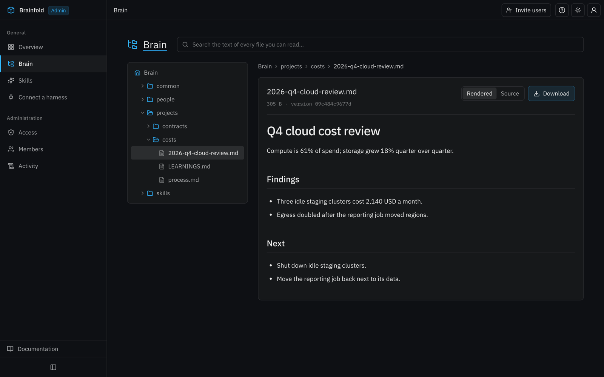
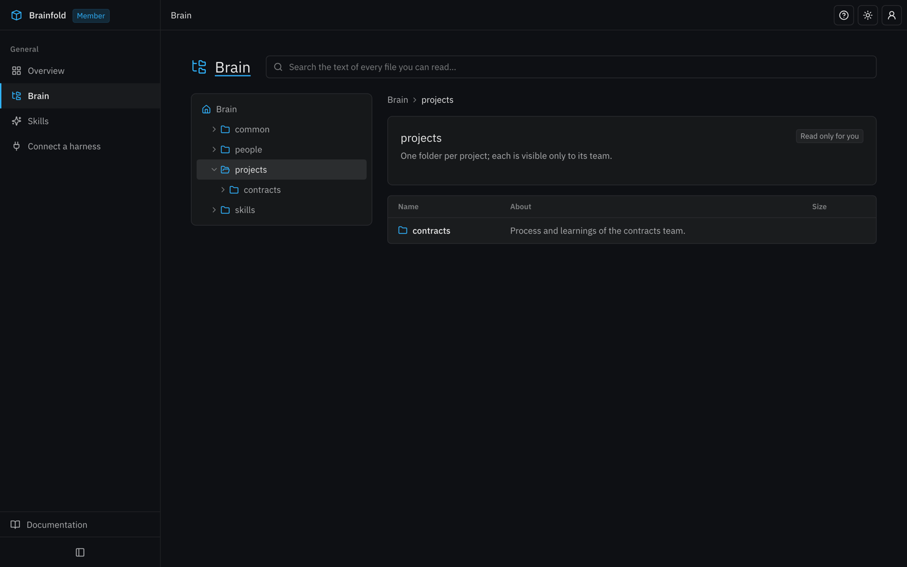

A shared brain for your team's agents
Brainfold is an MCP server that turns a folder into your team's memory: files with permissions that Claude Code, Codex or any other harness reads and writes. One server per team; each person connects their own agent.
What each agent knows stays with the team
Every person on a team runs their own harness, and what each agent learns stays in that person's session. Brainfold gives them one place to read and write, with the same permissions the people have.
Permissions per folder
Each folder says who reads and who writes it, by person or group. Nothing is open until a folder grants it.
Any harness
Fifteen MCP tools over plain files. Claude Code, Codex, Cursor or any MCP client connects with one command and a personal token.
Skills and learnings
Procedures the team wrote once reach every agent allowed to read them, and agents note what they solve next to the work.
History and activity
Every change is versioned and can be restored. Every call is logged with who made it and whether it was allowed.
Same server, different view
An agent has exactly the access of the person whose token it uses. In this synthetic example, Bruno is on the costs team and Carla is not.

/projects/costs.
contracts. For her agent the costs folder does not exist, and the refused read is in the activity log.Try it on your machine
It needs uv. The example brain is synthetic. The README continues with the first account and the token.
# Start the server over the example brain git clone https://github.com/jackspolski1103/brainfold && cd brainfold uv sync cp -R examples/brain /tmp/brainfold-brain uv run brainfold serve --root /tmp/brainfold-brain # Connect a harness with the token you create claude mcp add --transport http brainfold http://127.0.0.1:8020/mcp \ --header "Authorization: Bearer <token>"
Where it stands
Brainfold is young. The server, permissions, history, skills, accounts and the web panel work and are tested, and it runs on the author's own deployment. It has not been used by many teams yet, so expect rough edges and open an issue with what you find.